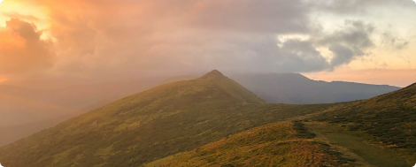

Це допоможе тобі збільшити потік клієнтів і не витрачати зайвий час на їхній пошук
ЗареєструватисьНа сьогоднішній день в Україні помітно збільшився попит на цікаві та пізнавальні екскурсії. Деякі вивчають рідний край, а дехто втомився від поїздок за кордон. Тому вони подорожують Карпатами, Мукачевом, Ужгородом та іншими не менш примітними регіонами своєї країни. Частина з них приїжджає на своєму авто і вже на місці шукають потрібну інформацію, досвідчених гідів та екскурсоводів, хто зможе докладно розповісти історію цього краю та місцеві пам’ятки.
-
Розвиток як особистості
Ближче знайомство з рідними краями сприяє особистісному саморозвитку
-
Вільний графік
Робота із вільним графіком залишає час для інших занять
-
Багато клієнтів
Багато мандрівників із ближнього та далекого зарубіжжя прагнуть краще познайомитися з Україною
-
Гарний дохід
Така діяльність приносить гарний дохід
-
Нові знайомства
Постійні контакти з людьми дозволяють зав’язувати цікаві та перспективні знайомства
-
Шановна професія
Екскурсовод є дуже шанованою людиною та експертом у своїй справі та місцевості
Подібний вид співпраці вигідний як туристам, так і гіду. Експерт розповідає мандрівникам про те, що добре знає та непогано на цьому заробляє. Відпочиваючі не витрачають кошти на посередників і на послуги турфірм.
Go-To.Rest – це інформаційний майданчик, де ми розбираємо цікаві локації та публікуємо вичавлення корисної інформації для відвідувачів. Тому ми пропонуємо стати екскурсоводом на Закарпатті. Людина цієї професії отримує приголомшливий шанс вести активний спосіб життя, краще впізнавати цікаві місця та постійно пересуватися. А ті, хто вже вибрав собі терен гіда, можуть спростити собі життя з пошуком клієнтів і збільшити їх потік.
- Автоаматор, який проводить джип тури
- Гірський гід
- Міський екскурсовод
- Організатор, який проводить велотури
- Супроводжуючий групи
- Спеціаліст з піших маршрутів
- Віддалена робота з консультування та експертних рекомендацій
Особливо затребуваний гірський варіант, оскільки Закарпаття славиться своїми величними вершинами. Туристичний бізнес зараз знаходиться на підйомі, тому ці фахівці дуже затребувані та отримують добрий дохід.
Робота екскурсовода сьогодні є дуже престижною. Якщо людина склала список найбільш примітних локацій та маршрутів, добре знає свій край, а також здатна довго розповідати про місцевість, яка їй подобається, то їй необхідно спробувати стати туристичним гідом в Україні. Тим, хто вже вибрав цей бізнес своєю спеціальністю, подібна діяльність дозволить швидше розвиватися, отримувати нові знайомства та розвиватись як профі свого регіону. Професія гіда є особливо зручною для студентів, тому що залишається достатньо часу для занять. Дбати про простої не доведеться. Кількість мандрівників, які віддають перевагу поїздкам Україною, а особливо на Закарпаття, зростає день у день.
ЗареєструватисьGo-To.Rest гарантує потік замовників, оскільки використовує найсучасніші технології, а ваше завдання – надати свою експерність улюбленій місцевості.
-
01Зв’язатися з Go-To.Rest зручним для вас способом
-
02Описати свої знання та навички у сфері туризму
-
03Додати послуги
-
04Вибрати зручні умови
-
05Почати отримувати замовлення